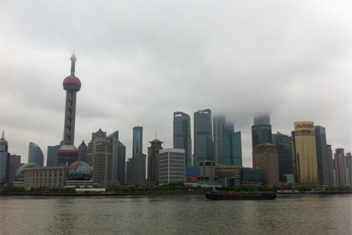
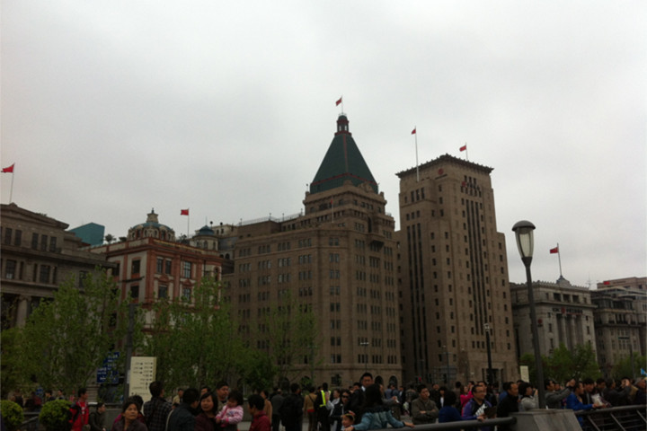
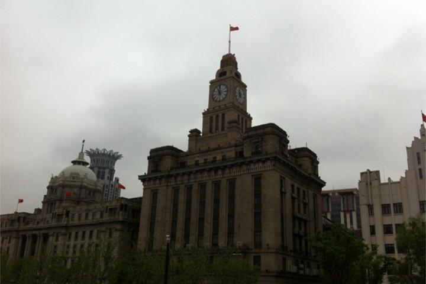
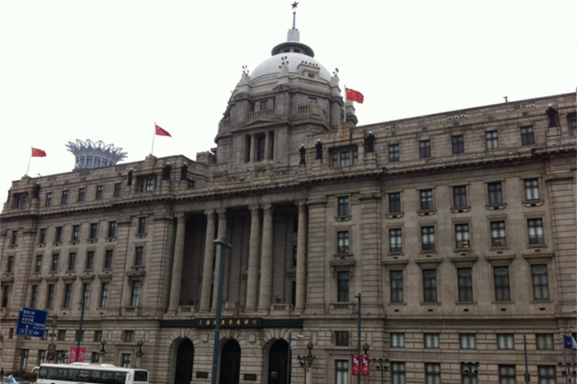
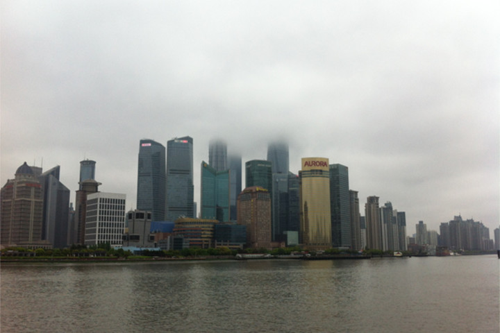
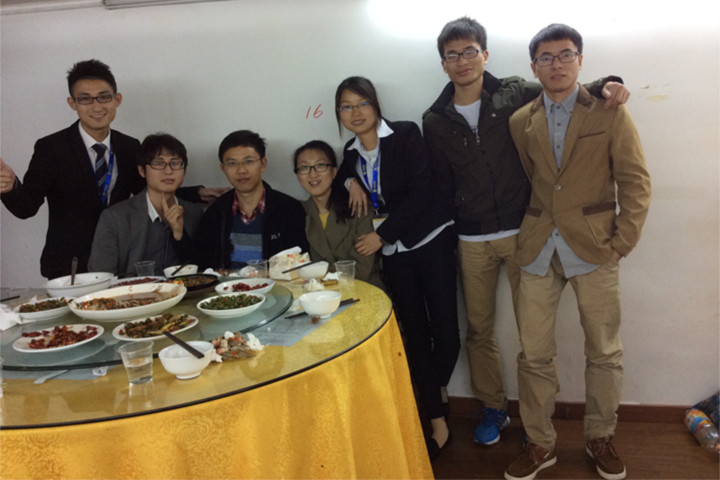

说来惭愧，长这么大还是第一次去被大家称之为魔都的大上海，而且这次上海之旅还是为了参加阿里巴巴实习生招聘的面试。本来面试时间被安排在4月18号的中午，可面试的前一天中午突然收到HR的电话说我的面试时间被改到当天下午5:30，无奈只好把已经买好的火车票改签到当天下午两点。从苏州到面试地点上海张江高科，时间仓促，这注定是一次匆忙的旅途。中午吃完饭回寝室洗了个澡后稍作收拾就出发了，先是一个小时的公交，然后再是火车，最后是乘地铁去面试的张江高科中心和泰酒店 。由于中午没有午休，此次旅途给我的感觉就是一个字“累”。到酒店后稍微休息了一会儿就被HR领到面试的教室去参加面试了。面试官的问题偏向于JS，特别是Ajax，由于学习前端的时间不长，所以JS和Ajax的知识还比较匮乏，好几个问题都没答上来。最后面试官估计怕我尴尬，所以问了两个简单点儿的问题——CSS盒模型和JS事件处理机制。整个面试过程持续半个小时的样子就结束了，面试官让我回去等结果，回去等结果其实就是宣布Over了，因为我看到现场有很多同学一面完之后都在那等等二面。不过自己倒也很淡定，这毕竟是自己第一次与职业相关的面试，经验和知识储备都不足，失败是很正常的，没有失败的铺垫何来成功！
由于后面要参加另外一个公司的笔试，不想来回折腾，所以打算去现在在上海理工大学读研的大学室友低调的寝室借宿几天，期间也正好见见几个老同学和稍微逛一下大上海。出酒店后就坐地铁去了上海理工大学，晚上低调请我在他们学校边的小餐馆搓了一顿。晚上睡觉前在阿里的的招聘系统里查询了一下面试结果，和自己预料的一样，初面未通过。
上海之旅的第二天见了一个初中同学，一早起床就去她工作的家具城红星美凯龙找她去了，由于她要上班所以只是陪她在工作的地方坐了坐，中午她请我在附近的面馆吃了碗面，虽然妹子没带我逛一逛繁华的大上海，但能见到几年没见的老同学还是挺开心的。
第三天和初中班长老刘、在我爱我家工作的尹松和张雪娟、汪长江还有在交大读研的汪军在地铁站锦江乐园附近的我爱我家门店聚了聚。汪长江、尹松和张雪娟这几位同学是好几年没见过了，汪军在合肥考研的时候见过，上一次见老牛也要追溯到前年的春节聚会。那天同样是一早就起来倒腾地铁，大概坐了一个多小时的地铁才抵达目的地。下地铁后先和老刘、老刘未婚妻、汪军，汪长江碰了头，然后一起去找还在加班的尹松和张雪娟。大家在他们工作的地方的会议室坐了一会儿聊了一会儿就差不多到了饭点，于是我们就近找了一家饭店吃了饭，这顿饭吃的时间比较长，大家聊了很多往事，最后也合影留了念。大家虽然很久没见了，平时也都各自忙于自己的生活，联系的也不多，但感情并未因此而减弱。
最后一天，一早从低调的寝室出发坐地铁去交大闵行校区和从苏州赶过来参加腾讯实习生笔试的同学们汇合，考完试晚上一块儿回了苏州，此次上海之旅结束。上海给我的感觉就是大、人多、节奏快，长时间的坐车很痛苦。我想将来我要是选择一座城孤老中年的话，这座城不会是上海，感觉上海这样的城市适合奋斗但不适合生活。回到苏州的苏州研究院，感觉像回到了家一般，就像回到了自己的主场，她以前还真没给我这种感觉。晚上和小伙伴们打了会儿乒乓球，感觉生活真美好！
由于后面要参加另外一个公司的笔试，不想来回折腾，所以打算去现在在上海理工大学读研的大学室友低调的寝室借宿几天，期间也正好见见几个老同学和稍微逛一下大上海。出酒店后就坐地铁去了上海理工大学，晚上低调请我在他们学校边的小餐馆搓了一顿。晚上睡觉前在阿里的的招聘系统里查询了一下面试结果，和自己预料的一样，初面未通过。
上海之旅的第二天见了一个初中同学，一早起床就去她工作的家具城红星美凯龙找她去了，由于她要上班所以只是陪她在工作的地方坐了坐，中午她请我在附近的面馆吃了碗面，虽然妹子没带我逛一逛繁华的大上海，但能见到几年没见的老同学还是挺开心的。
第三天和初中班长老刘、在我爱我家工作的尹松和张雪娟、汪长江还有在交大读研的汪军在地铁站锦江乐园附近的我爱我家门店聚了聚。汪长江、尹松和张雪娟这几位同学是好几年没见过了，汪军在合肥考研的时候见过，上一次见老牛也要追溯到前年的春节聚会。那天同样是一早就起来倒腾地铁，大概坐了一个多小时的地铁才抵达目的地。下地铁后先和老刘、老刘未婚妻、汪军，汪长江碰了头，然后一起去找还在加班的尹松和张雪娟。大家在他们工作的地方的会议室坐了一会儿聊了一会儿就差不多到了饭点，于是我们就近找了一家饭店吃了饭，这顿饭吃的时间比较长，大家聊了很多往事，最后也合影留了念。大家虽然很久没见了，平时也都各自忙于自己的生活，联系的也不多，但感情并未因此而减弱。
最后一天，一早从低调的寝室出发坐地铁去交大闵行校区和从苏州赶过来参加腾讯实习生笔试的同学们汇合，考完试晚上一块儿回了苏州，此次上海之旅结束。上海给我的感觉就是大、人多、节奏快，长时间的坐车很痛苦。我想将来我要是选择一座城孤老中年的话，这座城不会是上海，感觉上海这样的城市适合奋斗但不适合生活。回到苏州的苏州研究院，感觉像回到了家一般，就像回到了自己的主场，她以前还真没给我这种感觉。晚上和小伙伴们打了会儿乒乓球，感觉生活真美好！



坐的公交正好经过外滩，于是忍不住就下车来驻足了一会儿，拍了几张照片，毕竟人生中第一次见到东方明珠，外滩上这种欧式的建筑很多，大多是一些大银行在使用这些房子，我想正是这些建筑彰显了这座城的历史底蕴。

当天天气下着很小很小的雨，天上乌云密布，这种高楼直插云霄的情景的确给人以震撼，不得不佩服人类强大的改造其居住环境的能力。

这是和几位老同学的合影，希望大家在上海过的幸福，将来都有一个好的未来。